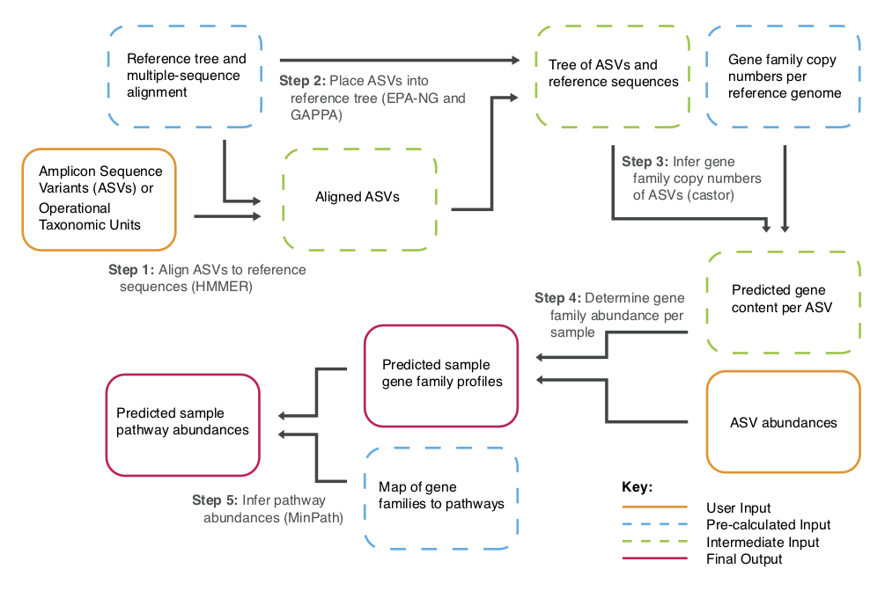

Chapter 4 Functional prediction
Functional prediction is a method to infer the functional pathways within a community. PICRUSt2 uses 16s sequences to infer abundances of the following types of pathways:
- EC: Enzyme Classification, https://www.qmul.ac.uk/sbcs/iubmb/enzyme/.
- KO: KEGG Orthology, https://www.genome.jp/kegg/ko.html.
- MetaCyc: Metabolic pathway, https://metacyc.org/.
4.1 PICRUSt2 pipeline
The PICRUSt2 pipeline consists of 5 major steps. The entire pipeline can be visualised below.

The steps are:
- The representative sequences for each ASV are aligned to reference sequences. These reference sequences are within the PICRUSt2 database.
- The aligned ASV sequences are placed into the PICRUSt reference tree. This allows PICRUSt2 to know the phylogenetic distances between its reference sequences and the ASV sequences.
- The gene family copy numbers of the ASVs are inferred. This is carried out by comparing an ASV to its phylogenetic neighbours. The gene family copy numbers of the reference genomes (represented by reference sequences) is known. PICRUSt2 therefore predicts that ASVs will have similar gene family copy numbers to closely related sequences/genomes.
- Gene family abundances are calculated for each sample. This is calculated using the predicted gene content per ASV and the ASV abundances.
- Pathway abundances are calculated using the predicted gene family abundances and a map of gene families to pathways.
4.2 Commands

We will use the abundance table we created in the main QIIME2 tutorial for PICRUSt2. It is recommended to not rarefy the table prior to the PICRUSt2 analysis.
Copy over the directory with the relevant files (including the table artifact) and then move into it.
cp -r /pub39/tea/matthew/NEOF/16s_workshop/picrust2 ~/Metagenetics
cd ~/Metagenetics/picrust2Although we do not want the table rarefied it is recommended to filter the table to remove very rare ASVs and to remove low depth samples.
First we will filter low frequency features/ASVs. You can look at the visualisation of table-dada2.qzv to see an overview of “Frequency per feature”. There seems to be no clear consensus of how many rare features should be filtered.
In this case we are going to filter out features/ASVs with a frequency less than 10 across all samples. With 18 samples and a mean frequency of >900 this should be safe.
#Filter features command
qiime feature-table filter-features \
--i-table table-dada2.qza \
--p-min-frequency 10 \
--o-filtered-table table-dada2.feat_min_freq_10.qza
#Visualise filtered table
qiime feature-table summarize \
--i-table table-dada2.feat_min_freq_10.qza \
--o-visualization table-dada2.feat_min_freq_10.qzvCheck the visualisation to see how many rare ASVs have been removed.
The next step would then be to remove samples with too low a depth. Generally I would say 20,000 would be a good cutoff but it does depend on your data and what the rarefaction curves show.
For demonstration purposes we will choose a depth cutoff of 50,000. We can therefore use the below command to remove samples with a depth lower than 50,000.
#Filter command
qiime feature-table filter-samples \
--i-table table-dada2.feat_min_freq_10.qza \
--p-min-frequency 50000 \
--o-filtered-table table-dada2.feat_min_freq_10.sample_min_freq_50k.qza
# Visualise filtered table
qiime feature-table summarize \
--i-table table-dada2.feat_min_freq_10.sample_min_freq_50k.qza \
--o-visualization table-dada2.feat_min_freq_10.sample_min_freq_50k.qzvNow that we have carried out the filtering we can run the PICRUSt2 pipeline. The command to run the full PICRUSt2 pipeline is:
qiime picrust2 full-pipeline \
--i-table table-dada2.feat_min_freq_10.sample_min_freq_50k.qza \
--i-seq rep-seqs-dada2.qza \
--output-dir q2-picrust2_output \
--p-placement-tool sepp \
--p-threads 1 \
--p-hsp-method pic \
--p-max-nsti 2 \
--verboseThe command will take ~30 minutes. If you would like to skip running the command or you encounter an issue you can copy the output.
cp -r /pub39/tea/matthew/NEOF/16s_workshop/q2-picrust2_output ~/Metagenetics/picrust2Notes
- The developers recommend using
--p-placement-method epa-ngand--p-hsp-method mpin real analysis. You may also need to include--p-edge-exponent 0. The options above were chosen due to speed. - For information on the parameters please see: https://github.com/picrust/picrust2/wiki/q2-picrust2-Tutorial
Issues
I have encountered an issue when trying to rerun the PICRUSt2 command with files and directories I have used before. This issue causes the command to fail. This would occur if you rerun with different parameters or a newly filtered file. The way to get around it, seemingly, is to create a new directory somewhere else and copy over the required files to the new directory. Then run the command in the new directory.
4.3 Visualisation
Next we will carry out some quick visualisations.
First move into the newly created directory with the output.
cd ~/Metagenetics/picrust2/q2-picrust2_outputList the files in the directory and you will see 3 files:
ec_metagenome.qza: Abundance table for Enzyme Classifications.ko_metagenome.qza: Abundance table for KEGG Orthology.pathway_abundance.qza: Abundance table for MetaCyc pathways.
We’ll look at the KOs, the first step being to summarize the table.
qiime feature-table summarize \
--i-table ko_metagenome.qza \
--o-visualization ko_metagenome.qzvLook at the visualisation and you should notice very high frequencies. This is expected as each KO will most likely be found in multiple ASVs. The frequency of a KO is based on the frequency of every ASV it has been matched to. Additionally there are more features (KOs) in this table than in the ASV table.
Let us see how the numbers change with the pathways abundance table.
qiime feature-table summarize \
--i-table pathway_abundance.qza \
--o-visualization pathway_abundance.qzvIn this case there are fewer features (pathways) because it is a broader classification (pathways rather than gene orthologs).
With these tables you can carry out downstream analysis such as alpha and beta diversity, biomarker detection etc. If you do this in the future you can most likely use the lowest sample frequency number as it will most likely be over 100k.
4.4 PICRUSt2 Links
That was a quick run introduction to PICRUSt2. There are good tutorials online you can use to get a stronger understanding of it.
Key limitations of analysing PICRUSt2 output: https://github.com/picrust/picrust2/wiki/Key-Limitations
Q2 PICRUSt2 tutorial: https://github.com/picrust/picrust2/wiki/q2-picrust2-Tutorial
Q2 PICRUSt2 installation: https://library.qiime2.org/plugins/q2-picrust2/13/
PICRUSt2 tutorial: https://github.com/picrust/picrust2/wiki/PICRUSt2-Tutorial-(v2.4.1)